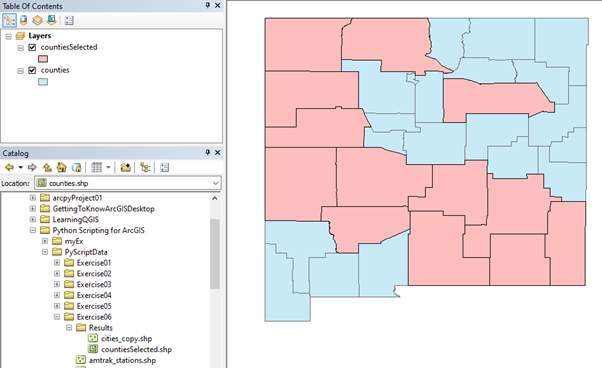

In this example we are retrieving the values from the field named "County" from the shapefile "counties.shp"
We use the builtin function arcpy.da.SearchCursor to attain this.
The output of the code is shown below:
In this example, we are retrieving the values based on a condition.
We are retrieving values where AREA is greater than 1.
The output of the code is shown below:
The arcpy.analysis.Select method extracts features from an input feature class or input feature layer,
typically using a select or Structured Query Language (SQL) expression, and stores them in an output feature class.
In the below code, we are creating a new output layer with Counties that has an AREA > 1
The output of the code is shown below:

Text file containing all the x and y coordinate values
The above text file has list of points, each starting with an ID number and followed by x and y co-ordinates.
The values are separated by a space (“ “).
We are going to use these coordinates of these points to create a new polygon.
The coordinate of the first point and the last point are same.
The output of the code is shown below: